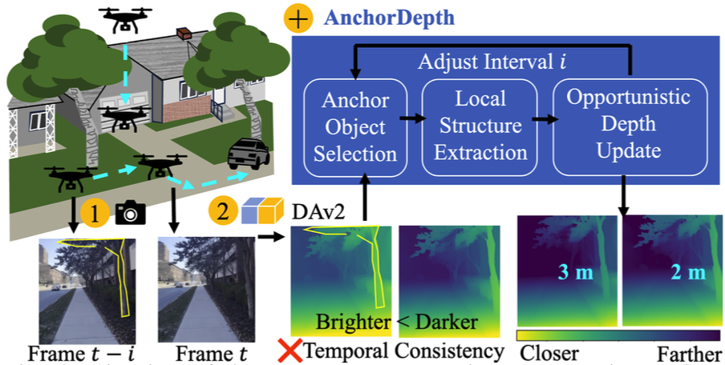
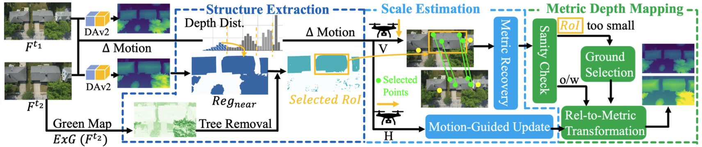
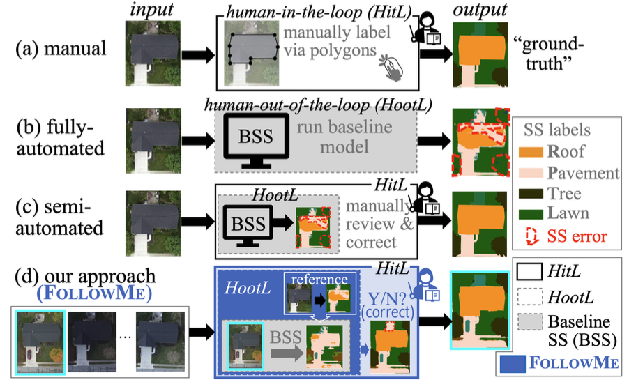
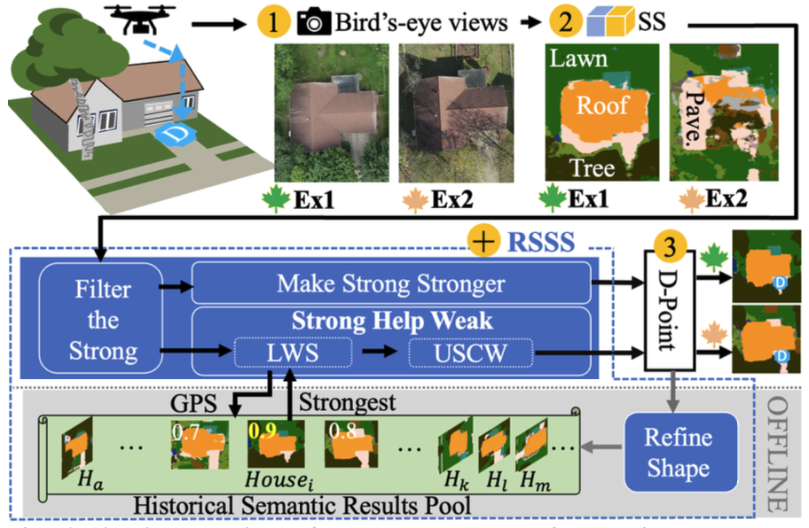
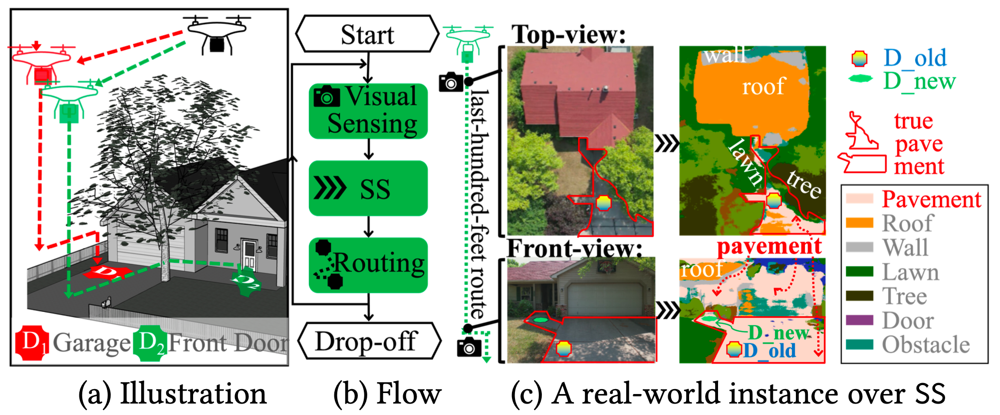
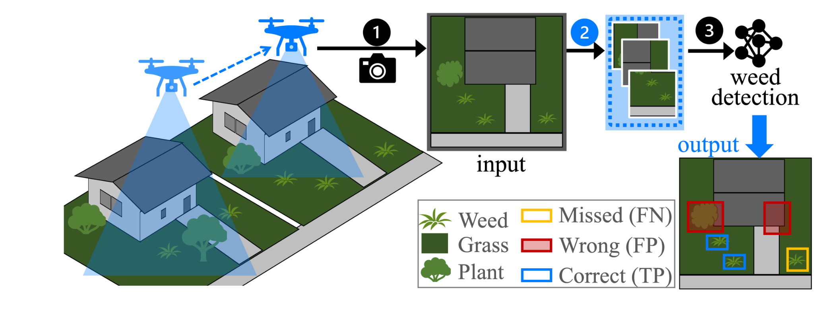
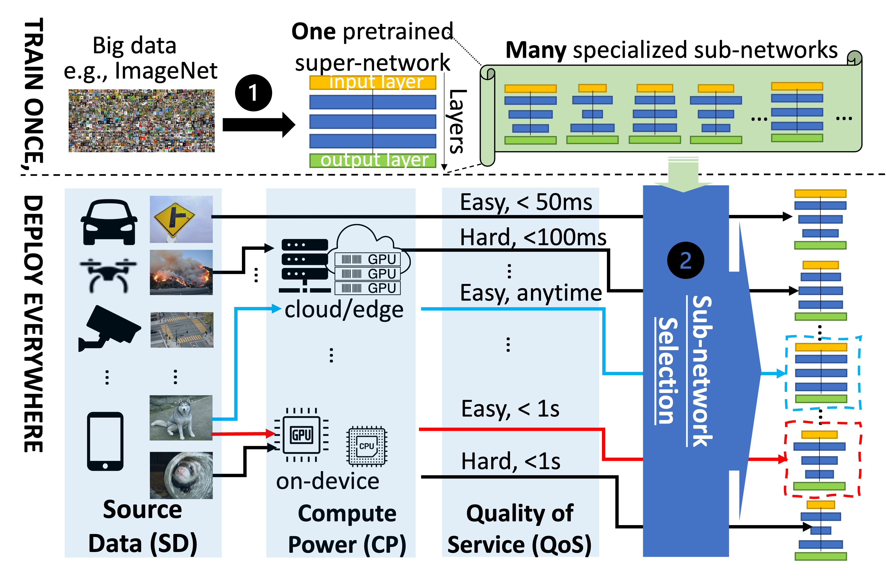

Projects
Autonomous drone perception and navigation, robust semantic understanding, and efficient mobile vision.
How My Projects Connect
Efficient Vision System Building
Semantic Segmentation (SS)
Metric Geometry (Depth Estimation)
AnchorDepth · Fast Metric Depth Estimation with Anchors for Drones

Building on Depth4VTOL, AnchorDepth extends real-time metric depth estimation from vertical flight to more general drone movements. Instead of relying on computationally expensive dense multi-view correspondences, it uses stationary, sufficiently large, and geometrically regular objects as anchors to recover metric scale from relative depth. This enables temporally consistent metric depth estimation in real time across common drone flight scenarios.
IEEE/RSJ IROS 2026Depth4VTOL · Precise Depth Estimation for Vertical Take-off and Landing UAVs

Beyond semantic understanding, autonomous drone delivery also requires accurate geometric perception of the surrounding environment. Depth4VTOL focuses on metric depth estimation during vertical take-off and landing over residential houses, where predominantly vertical motion provides limited viewpoint diversity. It exploits local geometric changes induced by vertical motion to recover metric scale and achieves real-time depth estimation at 12.4 fps.
ACM MobiCom 2026 · ImmerCom WorkshopFollowMe · Efficient Image Annotation Across Environments

Building on our prior work on robust semantic understanding across environments (RSSS), FollowMe focuses on efficient image annotation. It leverages high-quality annotations from one environment to automatically annotate images of the same physical scene under different times, seasons, and weather conditions, requiring only lightweight human review and correction. FollowMe reduces human effort by 94% while maintaining an average F1 score of 0.9.
ACM MobiCom 2026 · HumanSys WorkshopRSSS · Robust Structural Semantic Segmentation for Autonomous Drone Delivery to Door

Building on SSS, RSSS improves the robustness of semantic segmentation for autonomous drone delivery across changing seasons, weather, illumination, and other environmental conditions. Its core idea is to “Let Strong Help Weak”: reliable semantic results obtained under favorable conditions are leveraged to refine weaker predictions in adverse environments using the largely invariant structure and spatial layout of houses.
IEEE/RSJ IROS 2025SSS · Towards Autonomous Drone Delivery to Your Door Over House-Aware Semantics

We tackle the last-hundred-feet problem for autonomous drone delivery using a semantic segmentation-based approach that progressively guides the drone toward a convenient and safe drop-off point. We leverage single-family house structure to streamline and enhance semantic understanding in the drop-to-door setting.
We were honored to receive the Best Demo Award at ACM HotMobile 2024.
Other Drone Applications
A4AWD · Aerial Weed Detection over Residential Lawns

A4AWD targets UAV-based weed detection over residential lawns, where weeds appear extremely small and visually similar to surrounding turfgrass. It introduces a lightweight inference-time augmentation tailored for this challenging green-on-green aerial setting and was evaluated over 165 residential houses.
ICUAS 2026Earlier Systems
OPA · One-Predict-All for Efficient Deployment

Instead of training a specialized DNN for each deployment scenario, OPA uses one shallow subnet to test the water. The shallow subnet helps accelerate the search for an appropriate deep subnet, enabling more efficient DNN deployment across diverse use scenarios.
IEEE INFOCOM 2023VPPlus · Video Processing for Live Video Analytics at the Edge
VPPlus compresses video content live streamed from the device to the edge while preserving the accuracy and timeliness of video analytics. It enlarges the configuration space available for on-device processing and automatically generates feedback to guide joint tuning across more than eight parameters, such as brightness and saturation.
IEEE/ACM IWQoS 2022